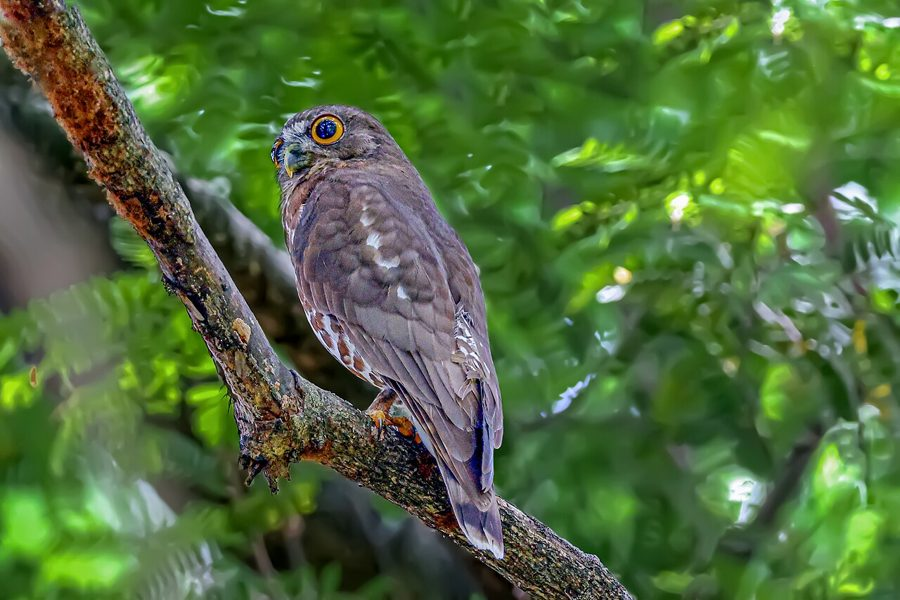

ब्राउन बूबुकBrown Boobook
Ninox scutulata · Strigidae · BRD-0237

- Scientific name वैज्ञानिक नाम
- Ninox scutulata (Raffles, 1822)
- Family कुल
- Strigidae
- Hindi हिंदी
- ब्राउन बूबुक
- Local names स्थानीय नाम
- brown boobook, boobook
- Status here यहाँ की स्थिति
- native
- Movement आवागमन
- Resident; numbers rise with migrants
- Known from कहाँ दर्ज
- Others have published records from the Basti–Ayodhya districts बस्ती–अयोध्या के ज़िलों से दूसरों के प्रकाशित अभिलेख
- IUCN IUCN
- LC
- Review समीक्षा
- audited and independently read
When to look कब देखें
Present all year. साल भर मौजूद।
Largely resident in suitable habitat, but numbers increase during winter months (October–March) with arrival of migrants from north. Populations show local nomadic movements in response to prey availability. All migrants and visitors →
Uses and possibilities उपयोग और संभावनाएँ
Drawn from the documented uses in the profile below, where each is labelled traditional, current or a research lead. All uses →
Tell it apart from इनसे अलग पहचानें
ब्राउन बूबुक / Brown Boobook
Ninox scutulata (Raffles, 1822) — Strigidae
ब्राउन बूबुक — यह छोटी उल्लू खेतों और बागों वाली जगहों पर दिन के दौरान आराम करती है और रात को शिकार करती है। इसका नाम इसकी खास कूकना से आता है — "बु-बु-बु" या "बुक-बुक"। इसकी आँखें बड़ी और पीली होती हैं, और शरीर भूरा होता है। यह बहुत तेजी से चूहों, छिपकलियों और कीड़ों का शिकार करता है। रात को इसकी आवाज़ सुनाई देती है, पर दिन में यह बहुत चुप रहता है।
Quick Identification त्वरित पहचान
| Feature | Description |
|---|---|
| Size | Small owl; 19–23 cm long; compact |
| Plumage | Brown or rufous-brown overall; finely barred and streaked |
| Head | Large, round; no ear tufts |
| Eyes | Large, bright yellow; forward-facing |
| Facial disc | Indistinct; brown with fine radiating lines |
| Wings | Relatively short and rounded; brown with barring |
| Tail | Short, brown, with faint barring |
| Feet | Feathered; talons yellow |
| Behaviour | Nocturnal; roosts by day in trees or cavities; solitary or in pairs |
| Call | Distinctive boo-boo-boo or book-book repeating sequence |
Field tip: A small brown owl with large yellow eyes, often heard at night giving its distinctive boo-boo or book-book call. During day roosts in tree cavities or dense foliage; difficult to see unless pointed out. In gardens and open woodlands in eastern UP, listen at dawn and dusk for the characteristic call. The bright yellow eyes and small size distinguish it from other owls.
हिंदी — कैसे पहचानें:
बहुत छोटी उल्लू।
बड़ी पीली आँखें।
भूरा रंग, धारियाँ।
"बु-बु-बु" कूकना।
रात को सक्रिय।
Morphology आकारिकी
Biometrics:
| Measurement | Range |
|---|---|
| Total length | 190–230 mm |
| Wing (flattened chord) | 155–180 mm |
| Tail | 75–95 mm |
| Bill | 13–16 mm |
| Tarsus | 18–22 mm |
| Weight | 100–150 g |
Size: 19–23 cm long; wingspan 45–55 cm. One of the smallest owls in the region.
Plumage: Overall brown to rufous-brown. Upperparts darker with finer barring and streaking. Underparts paler, buff or cream, with darker barring. No prominent markings; plumage serves as cryptic camouflage.
Head: Large, round; no ear tufts (unlike some other small owls). Crown and nape same colour as back.
Eyes: Large, bright yellow, set forward-facing; adapted for nocturnal vision. Eyes dominate the facial expression.
Facial disc: Indistinct compared to other owls; brown with fine radiating lines.
Wings: Relatively short and rounded, suited for maneuvering in woodland.
Tail: Short, brown, with faint barring; rounded.
Feet: Completely feathered (including tarsus); talons yellow.
Sexes: Females larger than males; little plumage dimorphism.
Vocalisations. Highly vocal, especially at night:
- Primary call: Distinctive boo-boo-boo or book-book, repeated rhythmically, 4–6 times per series.
- Alarm: Harsh, grating sounds when disturbed.
- Contact: Soft, varied sounds between mates.
हिंदी: "बु-बु-बु" या "बुक-बुक" कूकना। बहुत तेज़ आवाज़ रात को।
Behaviour & Ecology व्यवहार और पारिस्थितिकी
Nocturnal hunter: Active from dusk to dawn. Hunts from perches, swooping down to capture prey on ground or foliage. Feeds on:
- Small rodents (mice, rats)
- Insects and spiders
- Small birds and chicks
- Lizards and geckos
- Small frogs
Hunting technique: Sits quietly on a perch, listening and watching. Makes quick, acrobatic flights to capture prey. Can hunt in low light conditions.
Roosting: By day, roosts in tree cavities, dense foliage, or artificial structures (eaves, cavities in buildings). Solitary or in pairs. Roost site reused regularly.
Habitat specialist: Favours open woodlands, cultivated areas with scattered trees, and agricultural land with groves. Adaptable to human-modified landscapes.
Breeding: Monogamous; pairs may persist across seasons. Nests in tree cavities or abandoned holes of other birds.
Territoriality: Maintains feeding territory year-round; defended by vocalizations.
हिंदी: रात को शिकार करता है। दिन भर सो रहता है। छोटे जानवर खाता है।
Life Cycle / Phenology जीवन चक्र
Partial migrant: Largely resident year-round in suitable habitat, but numbers increase during winter (October–March) with arrival of populations from the north. Local populations show nomadic movements in response to food availability.
Breeding: Breeds February to June; peak April–May. Nests in tree cavities; 2–4 eggs.
Eggs: White eggs; incubation approximately 21–24 days by both parents.
Chicks: Altricial; fledge at approximately 3–4 weeks; dependent on parents for additional weeks.
Fledging: Young become independent by August–September.
Wintering: Wintering populations increase in winter months; nomadic movements follow rodent population fluctuations.
हिंदी: साल भर रहता है। सर्दियों में और भी बढ़ जाता है। बसंत में प्रजनन।
Host Plants or Prey आहार
| Food Type | Examples | Hunting Method |
|---|---|---|
| Small rodents | House mice, rats | Swooping from perch |
| Insects | Beetles, moths, grasshoppers | Gleaning from foliage or swooping |
| Small birds | Sparrows, munias | Predation |
| Lizards and geckos | House geckos | Ground or foliage predation |
| Small frogs | Tree frogs | Opportunistic |
हिंदी: चूहे, कीड़े, छिपकली खाता है। रात को शिकार करता है।
Predators / Natural Enemies शत्रु
- Larger owls and raptors: Barn Owl, other larger eagles
- Corvids: Crows mob owls during day
- Snakes: Occasionally predated by large snakes
हिंदी: बड़ी उल्लू और चील इसका शिकार कर सकते हैं।
Agricultural / Human Relevance कृषि प्रासंगिकता
Pest control: Feeds heavily on rodents; important natural biocontrol agent of crop pests.
Protected status: All wild birds protected under the Wildlife (Protection) Act 1972, Schedule IV. Hunting is illegal.
Agricultural benefit: Controls rodent populations in cultivated areas and stored grain stores.
Cultural significance: Known locally as "boobook" or "bubu" for its distinctive call.
हिंदी: यह विधि अधिनियम 1972 के अंतर्गत संरक्षित है। चूहे खाकर फसल की रक्षा करता है।
Expected Locally स्थानीय रूप से अपेक्षित
Not a field record. Written from published accounts for eastern Uttar Pradesh. No confirmed local sighting yet — if you have seen it, that is what the atlas needs.
अभी तक स्थानीय पुष्टि नहीं। यह विवरण प्रकाशित स्रोतों से है, किसी अवलोकन से नहीं।
The Brown Boobook is expected as a resident to partial migrant in eastern Uttar Pradesh, with larger populations in winter months. Listen for the characteristic boo-boo-boo or book-book call at dusk and night in open woodlands, gardens, and agricultural areas with scattered trees. The species is most easily detected by its call rather than visual observation. Numbers increase during winter as northern populations move south. A first record would be a sighting of the bird (photographed in hand-held light) or a clear audio recording of the distinctive call with date and location.
Distribution वितरण
Global range: South and Southeast Asia, from India to China and Philippines.
In India: Widespread year-round, more abundant in winter.
In Uttar Pradesh: Distributed throughout suitable habitat; populations increase in winter.
In Basti district / eastern UP: Resident to partial migrant in woodlands and cultivated areas. More abundant October–March.
Research Questions शोध प्रश्न
- What is the population trend of Brown Boobooks in eastern UP, and how does winter population compare to summer?
- क्या यह उल्लू खेतों में चूहों की संख्या को नियंत्रित करने में महत्वपूर्ण भूमिका निभाता है?
- How does roost site selection vary by season and habitat type?
- What are the proportions of different prey types in the diet across seasons?
- क्या यह उल्लू हर साल एक ही क्षेत्र में रहता है? (A child can record calling locations and monitor them monthly.)
- How do agricultural practices (pesticide use, rodent control measures) affect Brown Boobook populations?
Similar Species मिलती-जुलती प्रजातियाँ
| Species | Key Difference | Hindi | Field Rule | |
|---|---|---|---|---|
| [[jungle_owlet\ | Jungle Owlet]] (Glaucidium radiatum) | Similar size; prominent ear tufts; more heavily barred; different call | जंगली उल्लू | Jungle Owlet has prominent ear tufts visible; Brown Boobook lacks tufts. Calls are different. |
| [[spotted_owlet\ | Spotted Owlet]] (Athene brama) | Slightly smaller; white-spotted plumage; darker overall; different call | चिपकाली उल्लू | Spotted Owlet is darker with white spotting on head and wings. Call is different churring sound. |
Field rule: A small brown owl with large yellow eyes, no ear tufts, and distinctive boo-boo-boo or book-book call is a Brown Boobook. The lack of ear tufts and the specific call pattern are diagnostic.
Taxonomy & Classification वर्गीकरण
Original description. Described by Stamford Raffles in 1822 in Transactions of the Linnean Society as Strix scutulata. Type locality: Java.
Subspecies. Multiple subspecies across range; N. s. hirsuta occurs in India.
Family and order placement. Order Strigiformes; family Strigidae (typical owls). The genus Ninox contains about 25 species of hawk-owls and boobooks.
Phylogenetic notes. Brown Boobook is part of the genus Ninox, characterized by relatively small size and nocturnal hunting.
IUCN status rationale. Assessed as Least Concern (LC). The global population is large and stable. The species is adaptable to human-modified habitats and benefits from rodent populations in agricultural areas.
हिंदी: भारत में आम उल्लू है। पूरे साल देखी जाती है।
Photo Gallery फोटो गैलरी
No photos yet — add field photos to media/species/brown_boobook/ and run node scripts/sync_photos.js.
Wanted photos:
- Daytime roost in tree cavity or foliage
- Close-up showing yellow eyes and facial disc
- In flight at dusk
- With prey item
- Call sequence (audio recording)
References संदर्भ
- Raffles, S. (1822). Transactions of the Linnean Society of London 13: 277–278.
- Ali, S. & Ripley, S.D. (1987). Handbook of the Birds of India and Pakistan. Vol. 5. Oxford University Press, New Delhi. Pp. 154–157.
- Grimmett, R., Inskipp, C. & Inskipp, T. (2011). Birds of the Indian Subcontinent. 2nd ed. Christopher Helm, London. Pp. 195–197.
- König, C., Weick, F. & Becking, J.H. (1999). Owls of the World. Christopher Helm, London.
- BirdLife International (2023). Ninox scutulata. IUCN Red List of Threatened Species. IUCN, Cambridge.
- GBIF Occurrence Data — Ninox scutulata, India.
Source file: species/fauna/birds/brown_boobook.md